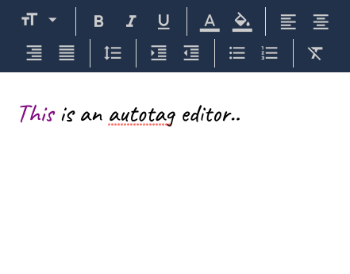

autotag.js
A simple and lightweight (~10kb) open source text formatter plugin built in plain Javascript.
8
9
10
11
12
14
18
24
30
40
70
Bigger
Smaller
1.5
Normal
Double
Correction
Clear
● ○ ▪ ...
Clear
1. a. i. ...
Build Your Own Text Editor
autotag.js provides a simple and intuitive way to apply custom formatting to text under the cursor.

Title
#awesome
text
Description
#awesome
text
on
+steroids
Supercharge your forms
Highlight hashtags, validate text or perform other operation on user input with less code.
Supports all major browsers
autotag.js works on all webkit based browsers (Chrome, Safari, Vivaldi), Firefox, IE 11 and Edge, both on the desktop and mobile.